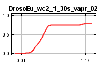
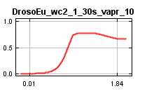
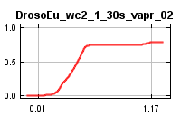
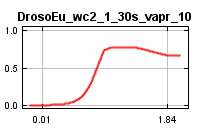

| Cumulative threshold | Cloglog threshold | Description | Fractional predicted area | Training omission rate | Test omission rate | P-value |
|---|
| 1.000 | 0.045 | Fixed cumulative value 1 | 0.663 | 0.008 | 0.039 | 3.091E-15 |
| 5.000 | 0.164 | Fixed cumulative value 5 | 0.481 | 0.044 | 0.072 | 8.608E-29 |
| 10.000 | 0.266 | Fixed cumulative value 10 | 0.382 | 0.092 | 0.118 | 1.903E-37 |
| 0.212 | 0.014 | Minimum training presence | 0.804 | 0.000 | 0.013 | 5.706E-9 |
| 10.775 | 0.282 | 10 percentile training presence | 0.371 | 0.100 | 0.124 | 1.51E-38 |
| 26.764 | 0.563 | Equal training sensitivity and specificity | 0.238 | 0.238 | 0.248 | 1.005E-50 |
| 17.272 | 0.430 | Maximum training sensitivity plus specificity | 0.303 | 0.149 | 0.190 | 7.459E-43 |
| 26.021 | 0.554 | Equal test sensitivity and specificity | 0.242 | 0.230 | 0.242 | 1.507E-50 |
| 22.311 | 0.501 | Maximum test sensitivity plus specificity | 0.265 | 0.199 | 0.216 | 2.65E-48 |
| 2.315 | 0.093 | Balance training omission, predicted area and threshold value | 0.572 | 0.013 | 0.052 | 3.168E-21 |
| 5.563 | 0.175 | Equate entropy of thresholded and original distributions | 0.467 | 0.054 | 0.072 | 1.336E-30 |


 


